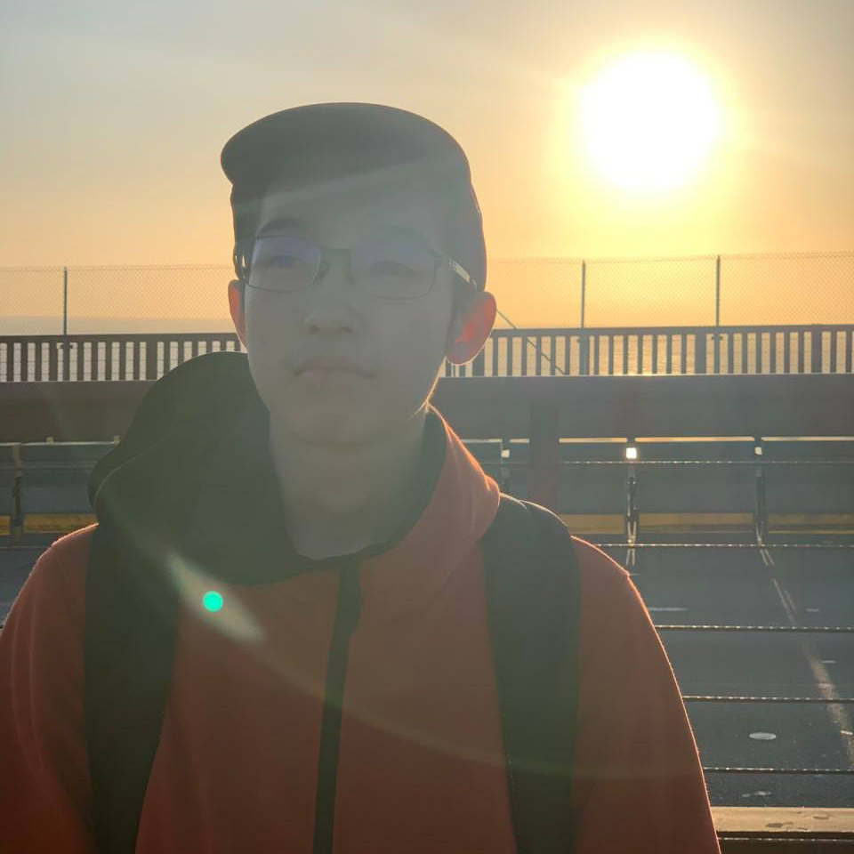
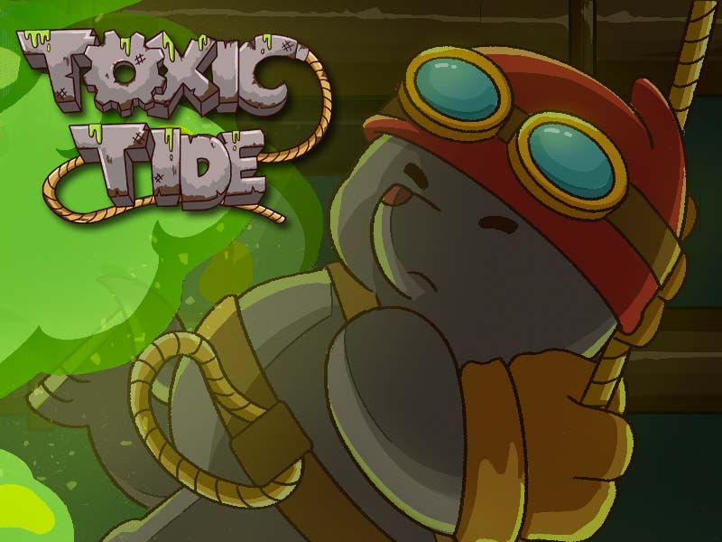
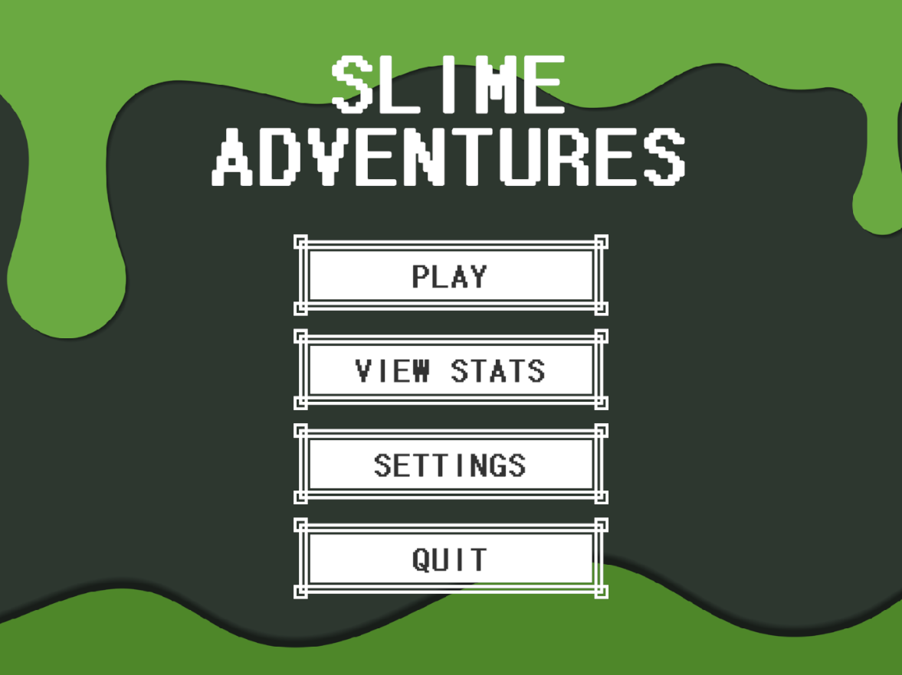
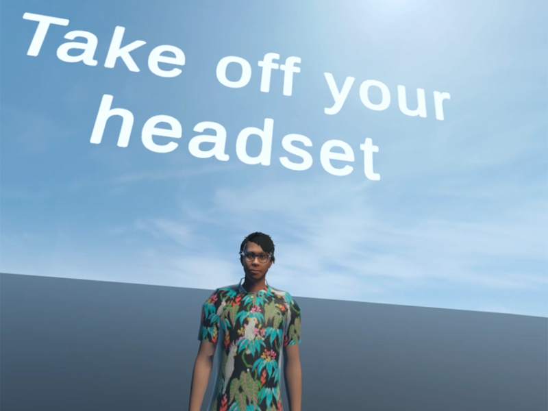
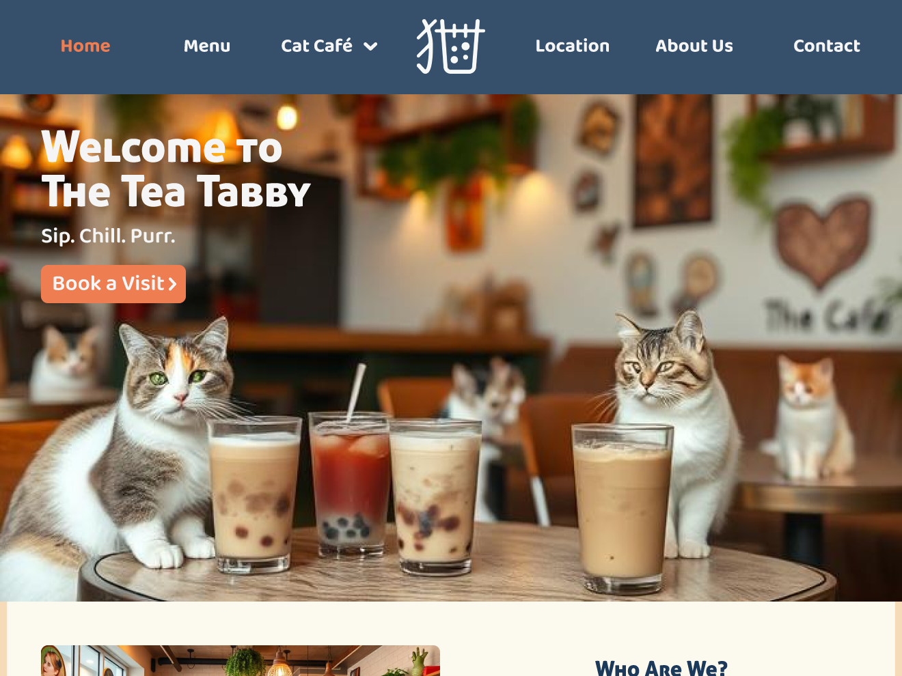

AREAS OF EXPERTISE
Game Designer
Served as a gameplay and technical designer for multiple projects.
Unity Game Engine
5+ years of experience using the Unity Engine for numerous projects.
C-Family Development
Proficient in C and C#, with experience in C++ for game engine development.
UI/UX Development
Experienced in softwares like Figma and Adobe Creative Suite.
ABOUT ME
UI/UX DESIGNER & GAME DEVELOPER
I am currently a year 2 User Experience and Game Design student eager to hone my design and game development skills.
Games have been a major part of my life for as long as I can remember. My early childhood was spent playing games such as Pokemon, Halo and League of Legends. This sparked a deep fascination within me as to the inner workings of how video games work, and it's my desire to hopefully create something that people around the world can enjoy, much like how I enjoyed the countless hours spent playing video games.
Alongside this game development journey, I have also discovered an interest in User Experience! Be it in software form like a website or a physical experience like eating at a restaurant, analyzing how different elements come together to create a cohesive experience is something truly fascinating to me.

GAME PROJECTS I'VE BEEN A PART OF

Toxic Tide
2D Side-Scrolling Endless Runner

Slime Adventures
2D Top-down Shoot 'Em Up

VR Wedding Proposal
VR Simulation Game
UI/UX PROJECTS I'VE DONE

Original Brand Design
UI/UX Design Project